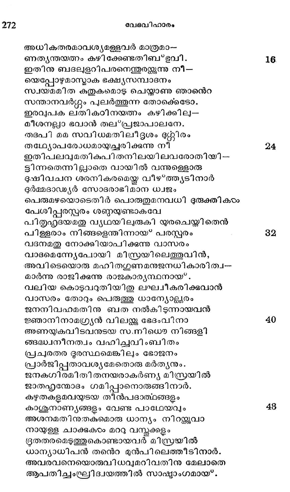
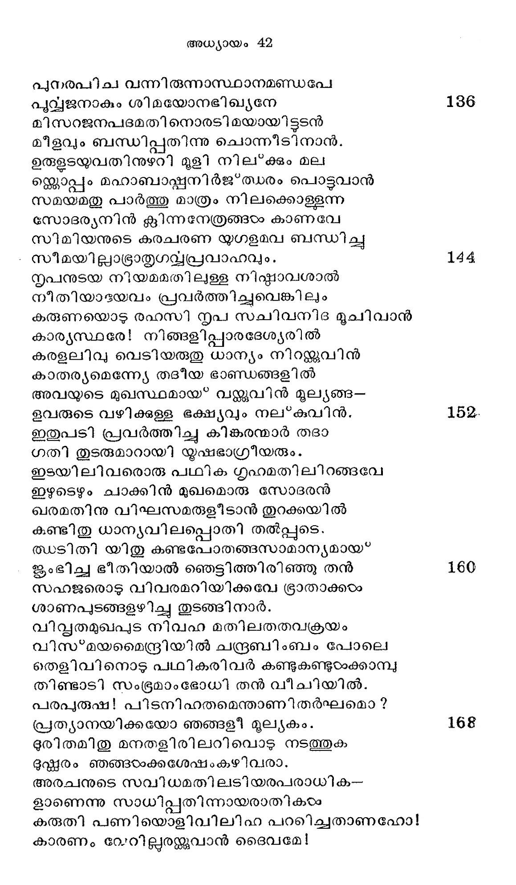

ഇസ്രരയേല്പത്രന്മാർ ധാന്യം വാങ്ങുവാന് മിസ്രരയിമില് ചെല്ലുന്നതു
വൃത്തം--അതിസമ്മതാമിശ്രയായ കളകാഞ്ചി
ഇതു സമയമതിവിപുല മനശന മഹാമാര്ി-
യീടെഴും കാനാന് ദിശയിലും വായ്ക്കുവേ
ജനനി വഹ മനുനിമിഷ മവശത്യിലായ'* തഥാ
ജാതമായി സ്രേല് ഗൃഹത്തിലും സങ്കടം.
ദുരിതരതരവരുടയ ഭവനമതില് വന്നൊരു
ദുര്ഭിക്ഷ കാരണാലന്യോന്യ മന്നവർ
രഭസരഹിതലപനമൊടു നോക്കിത്തുടങ്ങി നാർ
രമ്യമല്യാതുള്ള വാക്കരച്ചിീടിനാര്. ള
ബല്ഛുലസുത സഹിതനൊരു സോദര്യനേപ്പരന്
ബാഡവിദ്വേഷം ദുഷിപ്പാനൊരുങ്ങി നാന്:
തവതനയരധിക, മവരാണു ഭോജ്യങ്ങളേ
തിന്നുതിര്ത്തിടുന്ന, താകയാൽ വേണ്ടൊരു
ചെലവു വക കരുതിടുകയെങ്ങുനിന്നെങ്കിലും
ചെൊററു മാത്രം വേണ്ടു ഞങ്ങഠംക്കു ഭക്ഷണം.
അധികതരമാവശ്യമളളവര് മാത്രമാ-
ണത്ൃന്തയത്നം കഴിക്കേണ്ടതിബ'*ഭൂവി.
ഇതിനു ബദലുളറിപരനെന്തുരയ്്കുന്നു നീ-
യെപ്പോഴുമാന്മാക ഭക്ഷ്യസമ്പാദനം
സ്വയമമിത കുതുകമൊടു ചെയ്താണു ഞാനന്െറ
സന്താനവര്ഗ്ഗം പുലര്ത്തുന്ന തോക്കെടോ.
ഇരവുപക ലതികറഠിനയത്നം കഴിക്കില-
മീശനല്ലാ ഭവാന് തല'*പ്രജാപാലനേ.
തദപി മമ സവിധമതിലീദൃശം ഭൂറ്നിരം
തലഥ്യോപരോധമായുചരിക്കുന്നു നീ
ഇതിപലവുമതികുപിതനിലയിലവരോതിയി--
ടിന്നതെന്നില്ലാതെ വായില് വന്നുള്ളൊരു
ഭൂഷിവചന ശരനികരമെയ്ക്ക വീഴ*ത്ത്ൃയടിനാര്
ദുര്മ്മദാഡ്യര് സോദരാഭി മാന ധ്വജം
പെരുമഴയൊടെതിര് പൊരുതുമനവധി ദുരുക്തികരം
പേശിപ്പരസ്റ്റരം ശണ്ണയുണ്ടാകവേ
പിതൃഹൃദയമതു വ്യഥയിലുരുകി യുരചെയ്യി തെൻ
പിള്ളരാം നിങ്ങളെന്തിന്നായ* പരസ്പരം
വദനമതു നോക്കിയാപിക്കുന്നു വാസരം
വാദമെന്നേപോയി മിസ്രയിലെത്തുവിന്,
അവിടെയൊരു മഹിതഗുണമനുജനധികാരിത്വ-
മാര്ന്നു രാജിക്കുന്നു രാജകാര്യന്ഥനായ്.
വലിയ കൊടുവറുതിയിതു ലഘ്വീകരിക്കുവാന്
വാസരം തോറും പെരുത്തു ധാന്റയോള്ലരം
ജനനിവഹമതിനു ബത നല്കിടുന്നായവന്
ജ്ഞാനിനാമഗ്ര്യന് വിലയ്ക്കു ഭേദംവിനാ
അണയുകവിടവനുടയ സന്നിധൌ നിങ്ങളി
ങ്ങദ്ധ്നീനത്വം വഹിച്ചവിംബിതം
പ്രച്രതര ദൂരസ്ഥമെങ്കിലും ഭോജനം
പ്രാര്ജിപ്പതാവശ്യമേതൊരു മര്ത്യനും.
ജനകഗിരമിതിതനയരാകര്ണ്യ മിസ്രയിൽ
ജാതഹ്ൃന്മോദം ഗമിപ്പാനൊരുങ്ങിനാര്.
കഴതകളമവയുടയ തീന്പദാത്ഥങ്ങളും
കാശുനാണ്യങ്ങളും വേണ്ട പാഥേയവും
അശനമതിനുതകുമൊരു ധാന്യം നിറയ്ക്കുവാ
നായുള്ള ചാക്കുകരം മററു വസ്തുക്കളം
ദ്രതതരമെടുത്തുകൊണ്ടായവര് മിസ്രയില്
യാന്യാധിപന് തന്െറ മുന്പിലെത്തീടിനാര്.
അവരവനെയൊരുവിധവുമറിവതിനു മേലാതെ
ആപതിച്ചംഘ്രിദ്വയത്തില് സാഷ്മാംഗമായ്.

അനുജനവര് മുഖകമല മത്ര കണ്ടപ്പൊഴേ--
ഇ്ലാശുനന്നായറിഞ്ഞീടിനാനെങ്കിലും
പരിചിതി നടിക്കാതെ ഗയേവധ്വാനേന
പാടദപ്രണതരോടോതിനാനീദൃശം:
ജനപദമെതില്നിന്നു വന്നിടുന്നൂ നിങ്ങരം
യാതാത്ഥവുമെന്തറിയിക്കുവിന് ക്ഷണം.
മറുപടിയ്രച്ചവരീവിധം: ധാന്യാത്ഥ-
മാഗതരാകുന്നു കാനാനില് നിന്നിഹ
ഉടനെയിഭമോതിനാന് യോസ്േപ്പു: ദേശത്തി-
നൂനത തേടുന്ന ചാരരത്രേ നിങ്ങാം
മിസറയുടെ കിഴിവുബത നോക്കിക്കുറി ക്കൊണ്ടു
മിത്രഭാവം കാട്ടി മർദ്ദനം ചെയ്യുവാന്
കരുതിയിവിടെത്തിയിട്ടള്ളോരു നിങ്ങളെ
കാരാഗ്ൃയഹത്തിലടന്ക്കുവന് സത്വരം.
പ്രുവ്ൃഥയൊടവരുളറി ചാരരല്ലാവയം
പുണ്ൃയവാനാമൊരു താതനന്െറ നന്ദനര്.
സഹജര് വയമുണ്ടു പന്ത്രണ്ടു പേരായതില്
സോദര്യനേകനി ല്ലെന്നാലിളയവന്
പിതൃസവിധമതില് മരുവിടുന്നുണ്ട; ചാരരായ*
ചണ്ടും നടന്നതില്പിജ്ജനം നിശ്ചയം.
മൃുഗനിവഹ പരിഭൂതിയില് നിരതരടിയങ്ങരം ദി--
ങഴമണ്ഡലം കീഴടക്കീടാന് കരുത്തരോ?
ഭൂണനിബഡദീിശ തിരയ്മിവര് ഗഹനരാഷ്മീയ-
തന്ത്രം പഠിച്ചു നടക്ക സംഭാവ്യമോ ?
മനസിശകലിധ്യാനമാര്ന്നുള്ള ധീവരന്
മാണിക്യമൂല്യം തിരഞ്ഞീടുമോ വൃഥാ?
ഇതുകരുതിയടിയരുടെ മേല്ള്ള സംശയം
ഇപ്പോടം പരിത്ൃജിച്ചാശി നല്ലേണമേ.
സഹജരുടെ ലപിതമിതു മുഹുരപി ശ്രവിക്കിലും
സംഭവിചില്ല കാരുണ്യം കനിഷ്ഠഷനു
അവരെയവനുടനെ ജയില് തന്നില് .ബന്ധിക്കുവാ--
നാജ്ഞകൊടുത്താന്; ദിനത്രയമിങ്ങനെ
കഴിയ്യമളവവരെ വെളിയില്ക്കൊണ്ടുവന്നിദം
കര്ശനമായൊരു കല്പന നല്ലിനാന്.
സകല ജഗദധിപ ഭയമകതളിരില് വാന്ക്കചയാല്
സംഹരിച്ചില്ല ഞാന് നിങ്ങളേ, യെങ്കിലും
ഒരുവനിഹ ബദ്ധനാം കാരയിൽ, സത്വര
മൊന്നിച്ചു പോകാ മിതരര്ക്ക് വേഗ്ദനി.
പുനരിവിടെവരുമള വിലവരജനുമൊന്നിച്ചു
പോരേണമല്വായ*കിലഗ്രവിധ്വംസനം.
ഫലമതിനു സംശയം തെല്ലമില്ലോര്ക്കുകില്
പാരമാത്ഥ്യം തെളിഞ്ഞീടുമിതേവഴി
പകതി മനമവരിതിനു നല്കിനാ രലാതെ
പസ്ത്യത്തിലെത്തവതേററ മസാദ്ധ്യമായ*
വിധ്യതരവങ്ങു നിന്നേവ മോതീടിനാര്:
വിസ്മചയമസ*്മ ദ്വിധി ബലം കേവലം.
തിരിയമിടമൊക്കയും തിന്മയല്ലാതെന്തു
തീണ്ടുന്നതി സ്രയേല് പത്രരാം നമ്മളേ
ഇതുവരുവതിന്നുള്ള കാരണം ധൂസ്പനെ
ഇഷ്*മയേല്യര്ക്ക് കൊടുത്ത ദുഷ്ണമ്മമാം
അവനുടയ കണ്ണൂനീര് കണ്ടും കൃപാലവ-
മങ്കരിച്ചിലുകഠാരില് നമ്മഠംക്കഹോ!
ഭവനപതിയതിനു പതില് നല്ലാതിരിക്കുമോ?
പുത്തു ഫലിക്കുന്നതാണു കര്മ്മദ്രമം.
നിജകൃതികളതതിനുടെ വിഭവമതു കാട്ടവേ
നീരസമെന്തുിന്നു ഭാവിച്ചിടുന്നു നാം.
അധികൃതനു തോന്നുന്ന സോദര്യനെ യയാ-
ളദ്യബന്ധിക്കടെ യെന്തു ചെയ*വു വയം,
വ്യപകലിത സംഖ്യയിൽ ബാക്കി നാട്ടില്ച്ചെന്നു
വിദ്രതം പ്രത്യാഗമിക്കാം സഹാനുജം.
ഇതിപലതുമവരുടയ ഭാഷയില് പേശി നാ-
രിംഗിതമാരുമറിയാതിരിക്കവാന്
നിജമറവ്യ വെളിയില് വരുമെന്നുകണ്ടന്യന്െറ
നാവുമൂലം പ്രഭാഷിച്ച യോസ്േപ്പുതാന്
സഫഹജരുടെ ലപിതമതു മുഴുവനുമറിഞ്ഞിതു
സംഭാഷണത്താലെജിപ്പടനായീിടിലും
തദനുസഹജാതരിന് ഭീതിദുഃഖങ്ങളാല്
വിദലിതഹൃദന്തനായ*ത്തീര്ന്നു യൂസ്പാഭിധന്
സ്വപനഫലമീദൃശം സിദ്ധമായ*വന്നതോ
ത്ുപചിത സുവിസ*മയ ക്രാന്തനായീടി നാന്.
ശിഖരി യൊരു നൊടിയിടയില് സമതലവ മപ്പോലെ
ശീഘ്രം സമസ്ഥലം ശൈലവുമായ* ഭൂവി
പലകലവി നലമൊടു നടത്തും മഹേശനന്െറ
പഞ്ചേന്ദ്രിയാതീതമാകും പരാക്രമം
ഹൃദയദരിീ നടുവിലിലകുന്ന വിജ്ഞാനമാം
ഹേമരത്തോജ്വലദ്ദീപം മുഖാന്തരം
തെളിവി നൊടു കണ്ടുകണ്ടാനന്ദ വാരാശി
തീരം കവിഞ്ഞു വഴിയുക കാരണാൽ
നയനയുഗമതു നിമിഷ മശ്രപൂര്ണ്ണങ്ങളായ്
നായകന് യൂസ്പന് കരഞ്ഞാന് രഹസ്യമായ്.
പുനരപിച വന്നിരുന്നാസ്ഥാനമണ്ഡപേ
പുവ്വജനാകും ശിമയോനഭിഖ്യനേ
മിസറജനപദമതിനൊരടിമയായിട്ടടന്
മീളവും ബന്ധിപ്പതിന്നു ചൊന്നീടിനാന്.
ഉരുളടയുവതിനുഴറി മൂളി നില്ക്കും മല
ഒ്ലലൊപ്പം മഹാബാപ്നിര്ജ്ത്ധരം പൊട്ടുവാന്
സമയമതു പാര്ത്തു മാത്രം നിലക്കൊള്ളന്ന
സോദര്യനിന് ക്ലിന്നനേത്രങ്ങം കാണവേ
സിമിയനുടെ കരചരണ യുഗളമവ ബന്ധിച്ചു
- സീമയില്ലാഭ്രാതൃഗവ്വപ്രവാഹവും.
നൃപനുടയ നിയമമതിലള്ള നിഷ്ടാവശാല്
നീതിയാടയവം പ്രവര്ത്തിച്ചുവെങ്കിലും
കരുണയൊടു രഹസി നൃപ സചിവനിദ മൂചിവാന്
കാര്യസ്ഥരേ! നിങ്ങളിപ്പാരദേശ്യരില്
കരളലിവു വെടിയരുതു ധാന്യം നിറവിൻ
കാതര്യമെന്നേയേ തടദീയ ഭാണ്ഡങ്ങളില്
അവയുടെ മുഖസ്ഥമായ* വയ്ക്കുവിന് മൂല്യങ്ങ-
ഭവരുടെ വഴിക്കുള്ള ഭക്ഷ്യവും നല*കുവിന്.
ഇതുപടി പ്രവര്ത്തിച്ചു കിങ്കരന്മാര് തദാ
ഗതി തുടരുമാറായി യൃഷഭാഗ്രീയരും.
ഇടയിലിവരൊരു പ്ഥിക ഗൃഹമതിലിറങ്ങവേ
ഇഴുടെഴും ചാക്കിന് മുഖമൊരു സോദരന്
ഖരമതിനു വിഘസമരുളീടാന് തുറക്കയില്
കണ്ടിതു ധാന്യവിലപ്പൊതി തല്പ്പുടെ.
ത്ധടിതി യിതു കണ്ടപോതങ്ങസാമാന്യമായ*
ജംഭിച്ച ഭീതിയാല് ഞെട്ടിത്തിരിഞ്ഞു തന്
സഹങജരൊടു വിവരമറിയിക്കവേ ഭ്രാതാക്കഠം
ശാണപുടങ്ങളഴിച്ചു തുടങ്ങി നാർ.
വിവ്ൃതമുഖപുട് നിവഹ മതിലതതവക്രയം
വിസ*മയമെന്ദ്രിയില് ചന്ദ്രബിംബം പോലെ
തെളിവിനൊടു പഥികരിവര് കണ്ടുകണ്ടുഠേക്കാമ്പു
തിണ്ടാടി സംഭൂമാംഭോധി തന് വീചിയില്.
പരപ്രുഷ! പിടനിഹതമെന്താണിതര്ഘമൊ?
പ്രത്യാനയിക്കയോ ഞങ്ങളീ മൂല്യകം.
ദുരിതമിതു മനതളിരിലറിപവൊടു നടത്തുക
ദുഷ്ണരം ഞങ്ങഠംക്കശേഷംകഴിവരാ.
അരചനുടെ സവിധമതിലടിയരപരാധിക-
ളാണെന്നു സാധിപ്പതിന്നായരാതികരം
കരുതി പണിയൊളിവിലിഹ പറലറിച്ചതാണഹോ!
കാരണം വേറില്ലരയ്ക്കുവാന് ദൈവമേ!

ചതിവരിവരിതി മിസറ രാജന്നു തോന്നീട്ട
ചാടിക്കണം രാജ്യസീമയീന്നെങ്ങളെ. 176
രിപുവടിയിലിതി കരുതി വേല ചെയ്യം വിധയ
രക്ഷിപ്പതിന്നാരു നിയെന്നിയേ വി ഭോ!
പ്രചരതരവ്യസനമൊട വിലപനമിദം. ചെയ്ത
പ്രക്ഷീണചിത്തരായ* വീടകം പുകിനാര്.
പിത്ൃസവിധ മതില് മിസറ യാത്രതന് വാത്തകഠം
പൂര്ണ്ണമായോതി ദ്ധരിപ്പിച്ച നേരത്തു
പരവശത പൊരുകി യിസഹാത്മജന് ചൊല്ലിനാൻ:
ബന്യമീന് പോകൊല്ച പോകൊല്ല തദ്ദിശി. 184
മമ തനങ്കരിരുവരിഹ നഷ്ടമായി പ്പൊഴെന്
മാനസാനന്ദ നിദാനമാം പുത്രനും
മറുദിശ പുകുന്തുടന് നഷ്ടമാവാനുള്ള
മാന്റുമനുവദീക്കില്ല ഞാനിന്നമേല്
ഇതിനു മറുമൊഴിയുളറി പ്രഥമതനയന് രൂബ-
നിങ്ങാനെ ചൊല്ലചരുതെന് പിതാവേ! ഭവാന്
അധിപതി സഗരരവം കല്വിച്ച വത്സനേ-
നാനയിക്കായ*കിലടിയര് തദന്തിക-- 192
തആണവതിനു സമ്മതം നല*കുകില്ലെന്നതാല്
ചെന്നേ മതിവരൂ ബന്യമീന് മിസ്രയില്.
ചെറുതുമൊരമംഗളം കൂടാതെ പുത്രനെ
ജ്യേഷ്ഷരാം ഞങ്ങഠം തിരിച്ചുകൊണ്ടന്നിടാം.
ഇതിനുലവമെങ്കിലും ഭംഗമുണ്ടാവുകി-
ലെന്നിരു നന്ദനര് വധ്യരാപ്വ ത്വയാ.
ഗിരമിതിനു മനുസരണമൊഴിയരുളിടാതെയ-
ഗ്ലോത്രനാഥന് ശഠിച്ചീടിനാന് പുവ്വവല്. 200